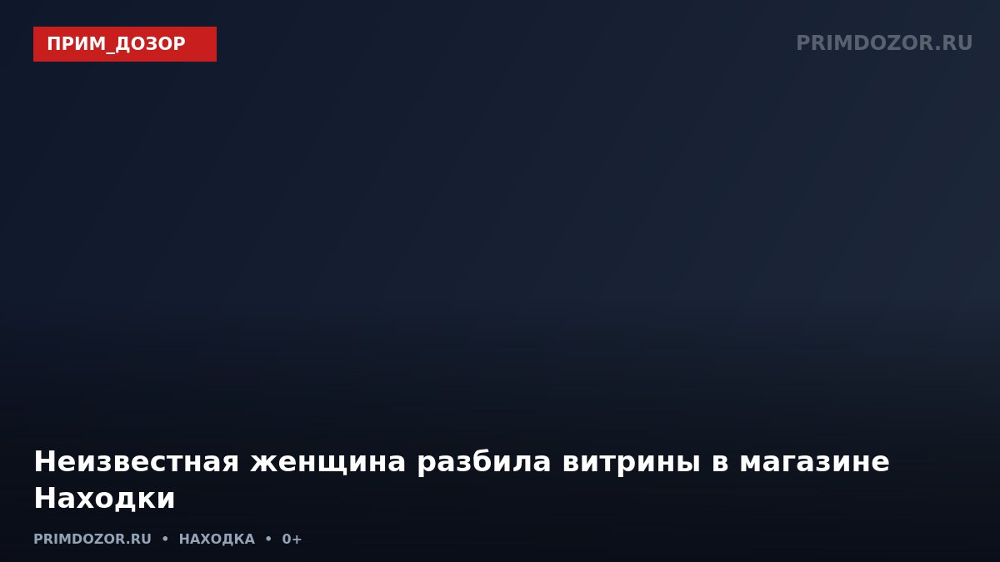

Неизвестная женщина разбила витрины в магазине Находки
В Находке, на Находкинском проспекте, произошел инцидент, который привлек внимание местных жителей и правоохранительных органов. В дежурную часть отдела МВ...

В Находке, на Находкинском проспекте, произошел инцидент, который привлек внимание местных жителей и правоохранительных органов. В дежурную часть отдела МВ...